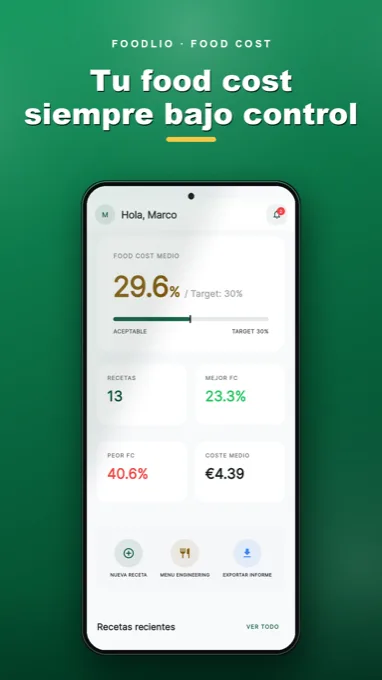

Ingredientes siempre actualizados
Modifica el precio de una materia prima y verás el coste recalculado en todas las recetas vinculadas.
Olvídate de hojas de cálculo obsoletas y estimaciones a ciegas. Actualiza el coste de un ingrediente y Foodlio recalcula al instante el coste por ración, los márgenes reales y el precio recomendado.

Modifica los valores y observa el food cost actualizarse en tiempo real.
Diferencia precio − ingredientes: 8,40 €
Ejemplo simplificado: no incluye IVA, personal ni gastos generales. No representa el beneficio neto.Modifica el precio de una materia prima y verás el coste recalculado en todas las recetas vinculadas.
Ingredientes y cantidades se transforman en cifras claras: coste de receta, porcentaje de food cost y margen.
Descubre la posición de tus platos por popularidad y rentabilidad: Estrellas, Caballos de batalla, Rompecabezas y Perros.
Parte de tu food cost objetivo para fijar con precisión el precio de venta sugerido.
Exporta tus datos fuera de la app para compartirlos con socios y equipo de cocina.
Supervisa en tiempo real el valor económico total de tus existencias de materias primas.
Comienza gratis con tus primeras recetas e ingredientes.
Recetas e ingredientes ilimitados, ingeniería de menús e informes en PDF.
Descubre la app en las tiendas →Restaurantes, pizzerías, bares, caterings, obradores, pastelerías y cualquiera que quiera controlar el coste real de sus recetas.
No. La diferencia entre precio y coste de ingredientes no incluye salarios, alquiler, luz, impuestos ni otros costes fijos del negocio.
Sí, puedes empezar gratis con tus primeras recetas e ingredientes. Las opciones de compra están detalladas en la app.